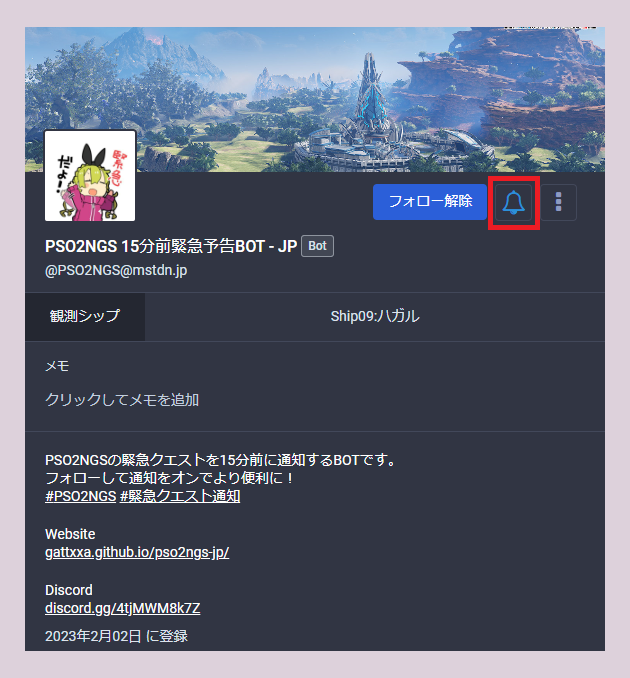
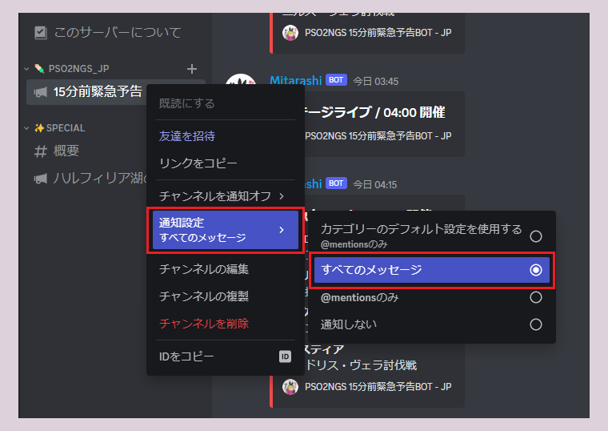
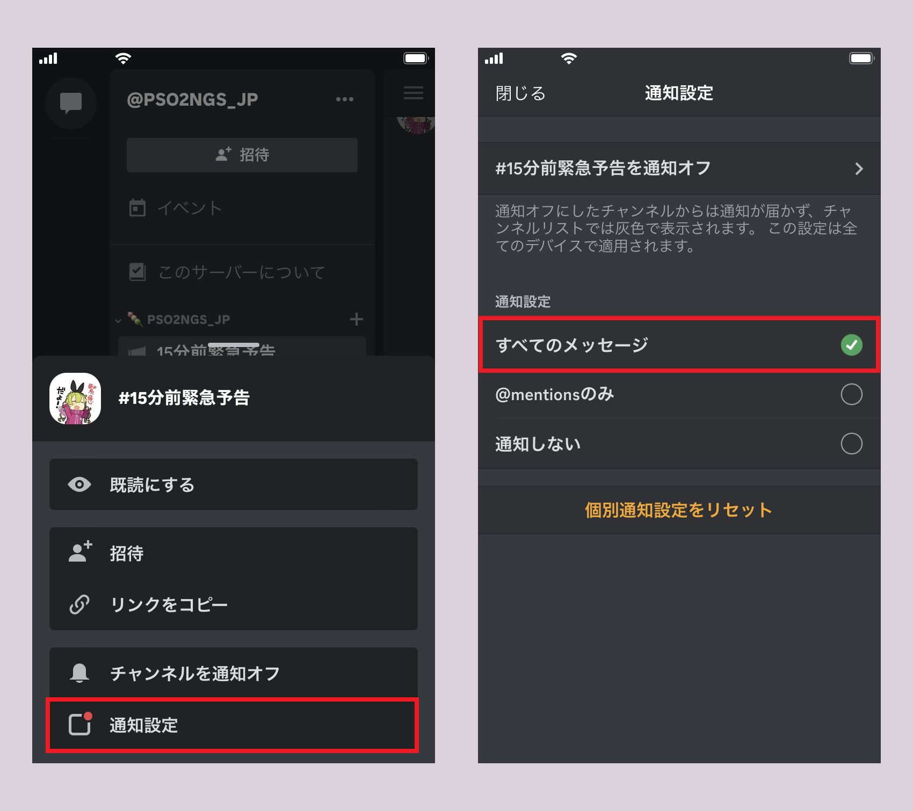

Twitterのような感覚で使えるSNSです。
概要がよくわからない方は以下のページが参考になると思います。
流行中のSNS「Mastodon」の「インスタンス」って何？
https://www.itmedia.co.jp/news/articles/1704/19/news121.html
通知の受け取り方
※PCの場合
フォローして通知をオンにすることで設定できます。

ああ
通知の受け取り方
※PCの場合
通知を受け取りたい対象のチャンネルを右クリックから設定できます。

※スマートフォン/タブレットの場合
通知を受け取りたい対象のチャンネルを長押しから設定できます。
